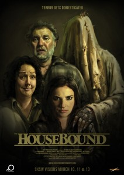

Gerard Johnstone
2014
107 minutes
TITLE: Housebound TEXT PLACEHOLDER 219
This film was recommended to you by a bartender you know who likes horror flicks. You specifically asked her for recommendations and this movie was top of her list. You ran it by another friend of yours who is a horror buff and he gave it an enthusiastic second. "No spoilers going in--and I recommend you keep it that way," he advised. "But this is one of those movies I would love to watch with someone else and just stop the film every ten minutes or so and ask them, 'So what do you think is going on in the film right now?' And then see how their answers change as the film progresses..."
You've done as he said, and you have read almost no spoilers for this film. The only thing you know about it is the basic premise that a New Zealand woman gets convicted of a crime and ends up in home detention with an ankle bracelet so that she can't leave the property. Unfortunately the property belongs to her mother, and her mother is absolutely convinced that the house on the property is haunted since "spooky things happen" there. It gets off to a slow start, but as your friend suggested, every ten minutes or so you think you have outsmarted the film and see where it's going and then it changes directions and does something different than you predicted. It's a wild ride. This isn't a great film but it is certainly a very good horror film.
You hate it when films are too obvious about pushing you to think or feel some way. A character is supposed to be handsome or beautiful or charming because the filmmaker says so or because of the actor who plays them, and you're just supposed to go along with it. Horror films can be particularly bad about this. Something is scary because they say it is. They put the creepy music cues and the jump scares in the right places. Boo! Are you not scared? This film does a much better job of anticipating where your mind is going without dragging you there kicking and screaming. And just when you think you're finding a plot hole or figuring out the next "twist", things get subverted. Is it great? Maybe not. But it does a better job than most films that try to do the same. Enjoy!
Time to choose something different: